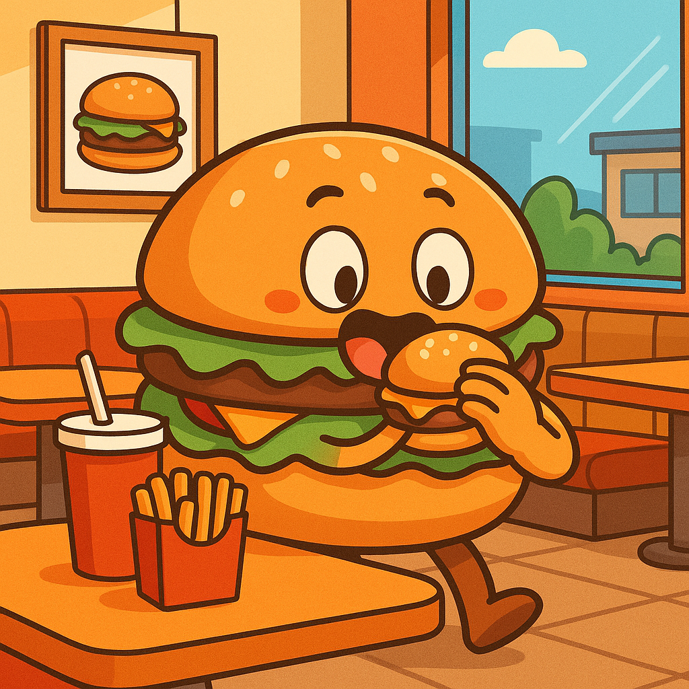

Sobre Nosotros
En Yoshii Burguer, nacimos con el sueño de transformar una hamburguesa en una experiencia. Desde nuestros inicios, apostamos por la calidad artesanal, los ingredientes frescos y el sabor auténtico que se siente en cada mordida. Somos más que una hamburguesería: somos una familia que ama lo que hace y que comparte con orgullo cada receta que ha sido cuidadosamente pensada para ti. Nuestro compromiso no solo está en la comida, sino también en brindar un servicio amable, rápido y con el mejor ambiente posible. Creemos en el poder de una buena hamburguesa para alegrar el día, reunir a los amigos o acompañar un momento especial.
Nuestra Vision
Ser reconocidos como una de las mejores hamburgueserías del país, expandiendo nuestra propuesta de valor con innovación constante, compromiso con la comunidad y pasión por la excelencia en cada servicio.
Nuestra Mision
Brindar experiencias gastronómicas inolvidables a través de hamburguesas artesanales de alta calidad, con ingredientes frescos, atención cálida y un entorno accesible para todos nuestros clientes.